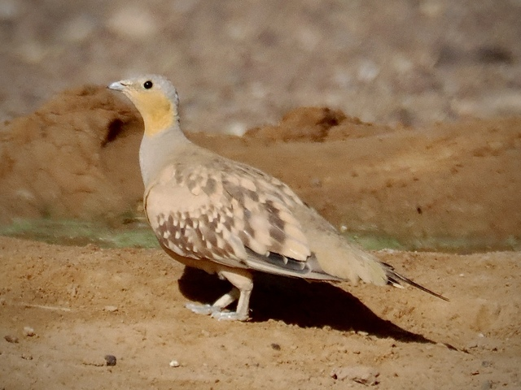

Spotted Sandgrouse
Pterocles senegallus
Order: Pterocliformes
Family: Pteroclidae

A sandy-coloured sandgrouse. Males have an orange cheek and brown spots on the wing. Female also has spots on the neck. Sandgrouse come to drink at water holes in the morning (around 06:00-10:00), before they head off to feed. Birds will land several metres away, then slowly walk to the water. After drinking, they do not linger and fly off immediately. The Spotted Sandgrouse seems to be the shiest of them all.